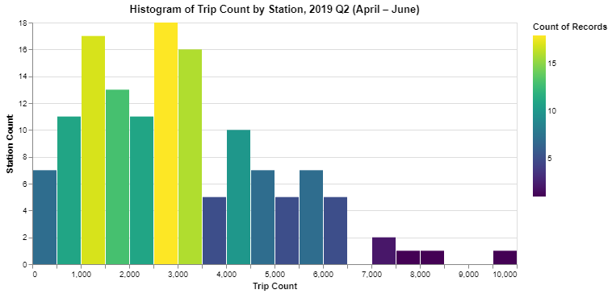
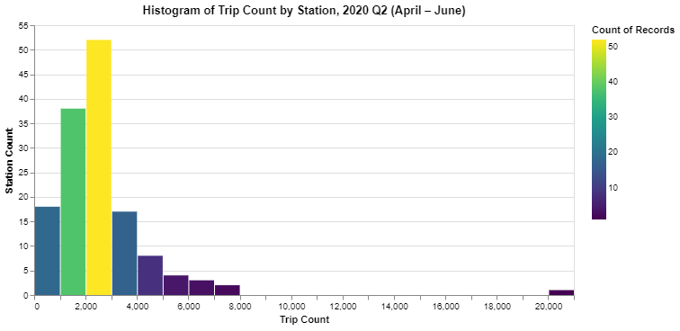
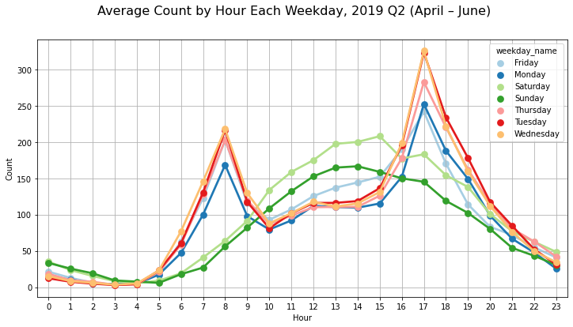
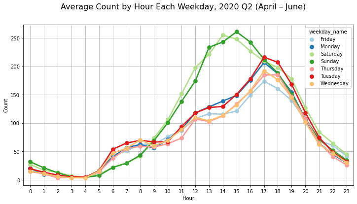
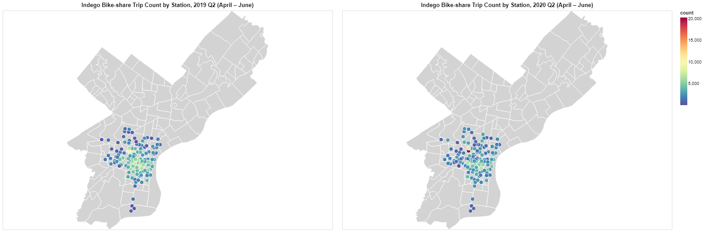

Exploratory Analysis of Indego Bike Share Service, Philadelphia
The Trip Count Comparison Before and After Covid-19
   The demand for bike-sharing increases after the pandemic and the travel pattern of biking has changed. Compared to the second quarter of 2019, the average number of bike-share trips by hour shows different trends between working day and weekend. The average trip count peaks at around 2 pm on weekend, and peaks at around 5 pm on working days. There is no significant rush hour peak on working days. A potential explanation is that many previous commuters work at home after the pandemic. There are more trips on weekend compared with working days. Additionally, the average duration of biking in 2019 and 2020 is 23 and 39 minutes, respectively. People biking longer time for each trip after the pandemic than before. We can conclude that people making short biking trip for the first/ last mile of commuting before the pandemic, now people make longer distance biking for more variety of reasons, the travel pattern of biking is changing.
Spatial Comparison Before and After Covid-19
 Full Report